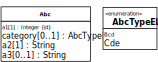
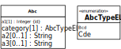
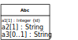

If you would like to look up the answers for the following quiz questions, you can check our discussion forum. If you don't find an answer in the forum, you may create a post asking for an answer to a particular question.
If you would like to do interactive quizzes with online feedback and with the option to ask a coach, then you should enrol in the advanced online course (book parts 4-5) offered by our partner developer-competence.com.
Consider the following class model:
 |
Which of the following statements are true? Select one or more:
☐ All instances of
Cdehave a value for attributea1.☐ The standard identifier of
Cdeisa1.☐ All instances of
Cdemay have an object referenceabreferencing an object of typeBcd.☐ Instances of
Abcmay have a value forc.☐ For any object of type
Abcthe value ofa3must be greater than the value ofa2.☐ For any object of type
Cdethe value ofa3must be greater than the value ofa2.☐ The standard identifier of
Cdeisc.
Consider the following class model:
In the case of such a simple class hierarchy, we can use the Class Hierarchy Merge design pattern where the entire class hierarchy is merged into a single class. Which of the following models describes the correct implementation of the Class Hierarchy Merge design pattern for the given Abc class hierarchy? Select one:
O

O

O
 O
 O
